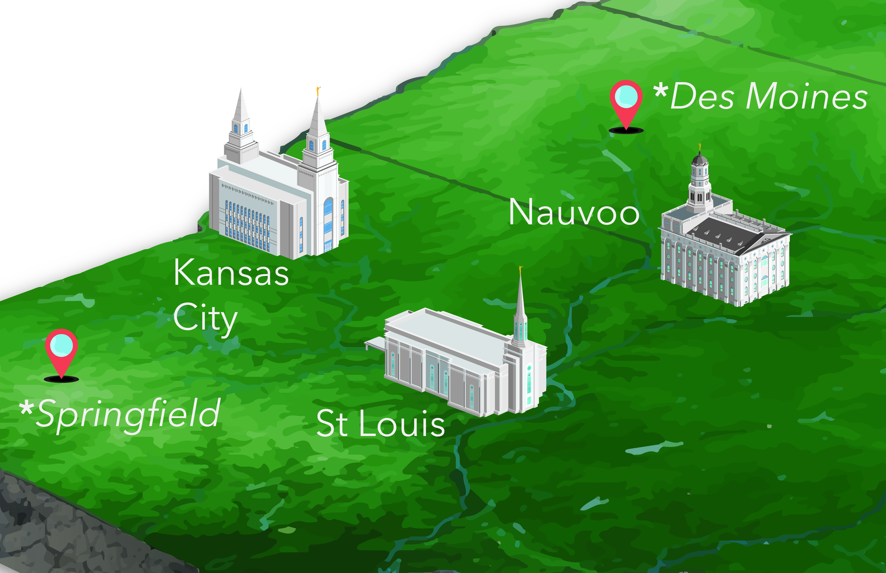
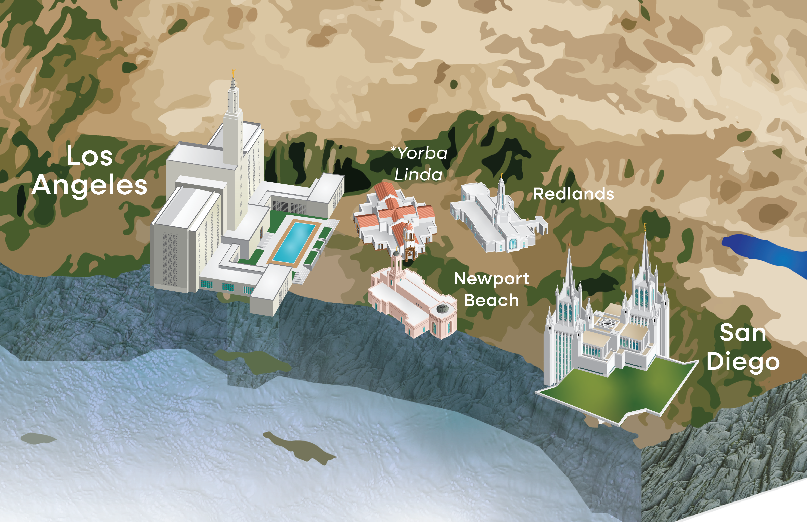
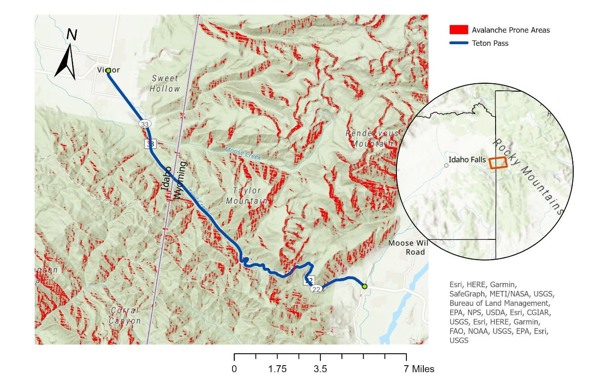

Every Way I Make a Map



Explore My Work

Illustrated Maps
Built for print and digital use.

Coursework
Spatial analysis, two GIS courses.

Pencil & Paper
Places I've lived.
About Me

I’m William Hanford, originally from Orlando, Florida, and I come from a smaller family with one sister. I served a full-time LDS mission in Colorado, and after returning home I earned my Associate’s Degree at my community college in Orlando.
I then transferred to Brigham Young University–Idaho, where I graduated with a Bachelor’s degree in Graphic Design with a UI/UX emphasis, along with a minor in Geographic Information Systems (GIS), since I’ve always had an interest in maps as well.
Cartography is something I’ve always found fascinating — it combines the tools of graphic design and GIS. That interest is what led me to create the temple maps and the rest of the work on this site.
UX Design Portfolio
Alongside cartography, I have done UX work, focusing on interfaces that are user-friendly and easy to understand. My UX portfolio has case studies and other graphic design work outside of mapping.